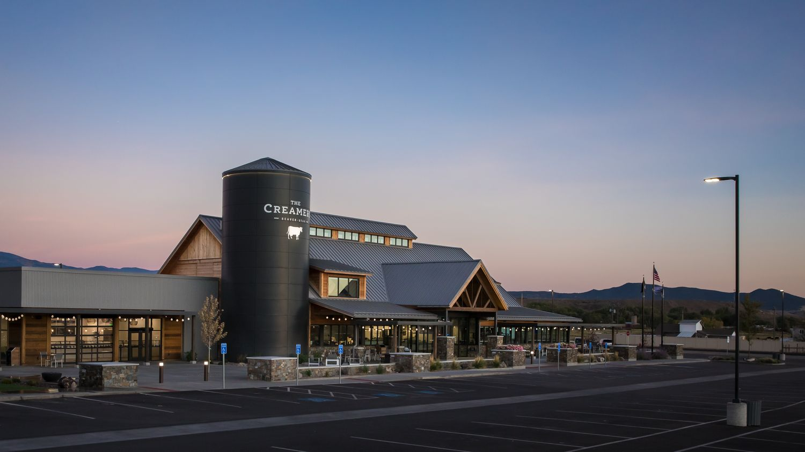

Retail & Restaurants · Beaver, UT
The Creamery
The iconic cheese plant in Beaver needed a refresh. A small store beside a dairy plant became a new building with a café, an educational dairy experience and more customers than anyone imagined.
Read the story